Created by Eugene Mihailenco / @randomize Typed with NeoVim in Dvorak
Standard submodule to include to each project
Helper scripts, build support, reusable stuff
Just add as submodule
git submodule add \
git@gitlab.bullytech.local:internal/bully-framework.git \
Assets/Bully.Core/BullyFramework
Create branch xyzw-improvements to contribute
Get access to internal group, make sure path matches, SSH clone master and get lfs error, clone develop, write this code:
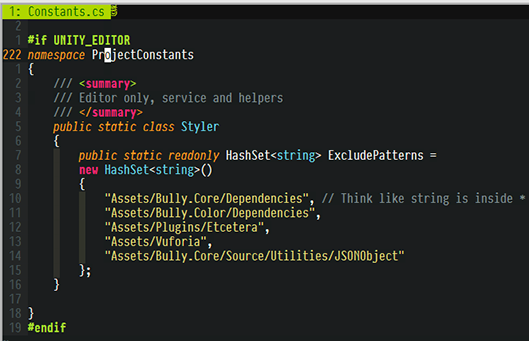and get some random warnings from it :)
<F3>, also has selection history
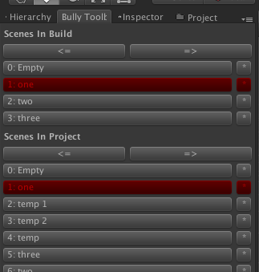 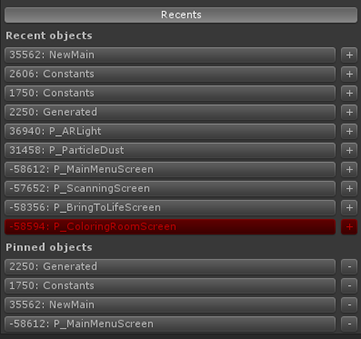<F4>, batch apply, diagnose dirty
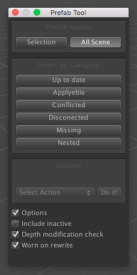Wraps Debug.Log and shields, Conditionals
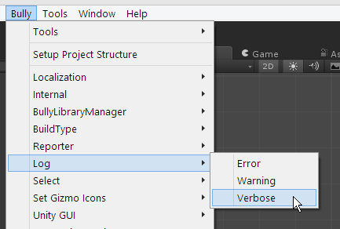Because why not
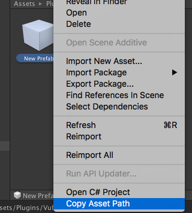Tools that check invariants
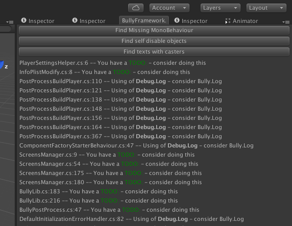UI helpers, batch mark, some deprecated and wip stuff
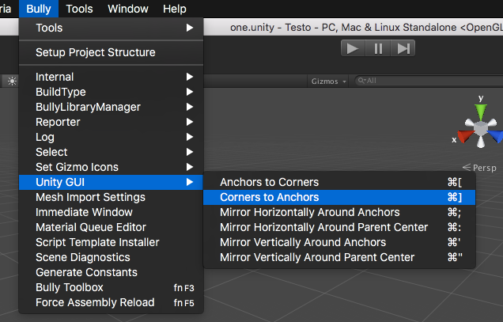UI intensive, 2D, Animations rich
Pella, CDM, Lanterns
Screens, Panels, reusable UI elements - actually MVC
Screen - Controller, specialized, thin, glues things and provides simple logic, prefab root
Manager - Controller, reusable, UI agnostic, heavy logic, prefab root can have settings
Panel - big UI set of elements seen together - can have interface to raise level of abstraction, sometimes reusable, prefab root
Item - UI related model data
In Color - nonlinear
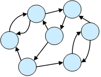Editor time yaml
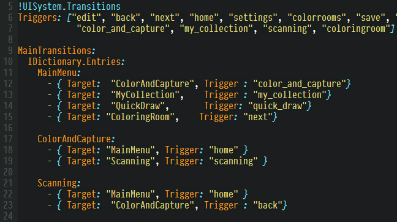Really just matrix
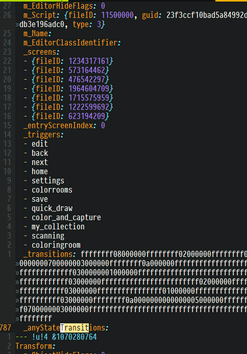CDM failed badly at that point
Color did better, but still has issues
Trigger initiates
Request is sent
Wait for confirmation
Callbacks for each phase
Most common pattern with most bad reputation
Merging into one root
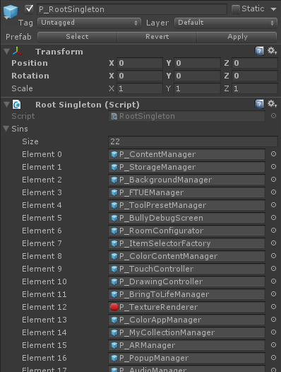Controlled instantiation
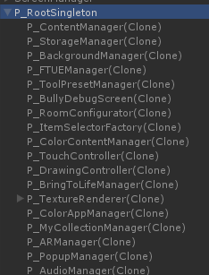Highly controversial
Most C# impl use reflexion
In simple case just have derived behavior with vars
SO - great but loads each internal object
Split description (Item) and date (Content)
Items are used were selection choise made
Once it made, data is loaded
Cannot reference directly
Need be string id
But need an interface
Painting - done with SetPixels, minimum reallocations, but cpu based
Paint bucket - gpu based, selection shader, sampling technique
Vuforia capturing
CodeGeneration
No scene conflicts
Subscreen system
All panels are in the scene
Trasitions
Vuforia capturing
Look at Gitlab internal group